Karadere Beach Guide
About Karadere
Karadere is a destination along Bulgaria's beautiful Black Sea coast. This destination features Sandy beach, Bulgarian coastal atmosphere, summer facilities, making it ideal for beach lovers, families, travelers seeking authentic Bulgarian coast. The Bulgarian Black Sea coast offers 378 kilometers of diverse beaches, and Karadere provides its own unique character and attractions.
What to Expect
The beach area at Karadere features fine to medium sand typical of Black Sea beaches. During summer months (June-September), water temperatures range from 22-25°C (72-77°F), perfect for swimming. The area offers standard beach amenities including umbrella and sunbed rentals (typically 10-20 BGN per day), changing facilities, and food services. Peak season runs from mid-July through mid-August, when the beaches are busiest and prices highest.
Getting There & Practical Information
The nearest airports are Burgas (BOJ) and Varna (VAR), both serving international and domestic flights. Bus services connect major coastal towns during summer. Accommodation ranges from budget guesthouses (40-60 BGN/night) to mid-range hotels (80-150 BGN/night). Bulgaria uses the Bulgarian Lev (BGN), approximately 2 BGN = 1 EUR. English is commonly spoken in tourist areas.
Nearby Attractions
Beyond the beach, visitors can explore other Black Sea destinations, local attractions. The Bulgarian coast combines natural beauty with historical sites, traditional villages, and opportunities for hiking, water sports, and cultural experiences. Each location offers something unique while maintaining authentic Bulgarian coastal character.
Best Time to Visit
June and September offer excellent weather with fewer crowds and better prices compared to peak July-August. Water is warm enough for comfortable swimming from mid-June through mid-September. For the quietest experience and best value, consider late May or early October, though some facilities may have reduced hours.
Tips for Visitors
Bring high SPF sunscreen (30+) as the sun is strong. Many beach vendors prefer cash. Learning a few Bulgarian phrases is appreciated. Book accommodations in advance for July-August. Consider renting a car to explore multiple beaches. Try local restaurants for authentic Bulgarian cuisine and fresh Black Sea fish. Beach umbrellas and sunbeds are available but bringing your own gear saves money.
Photo Gallery
Browse our collection of photos from Karadere showing the beach, facilities, and atmosphere. These authentic images help you understand what to expect and plan your visit effectively.
Hut- 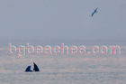
Dolphins
Dolphin
End of June
End of June 2
Karadere6574
Karadare Sunrize
Towards Byala- 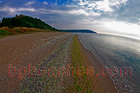
Sands
Cart
Post-card
Gale
High waves
Art- 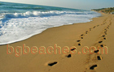
Two paths
Bar Chambao
Fisherman's boat- 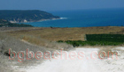
Panorama
Woods for the fire
Jana- 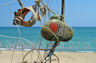
Postcard
Dog- 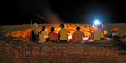
Fire in front of the bar
Jump
At fire
Tents- 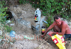
Spring
Eco- 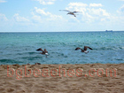
Gull
Nude- 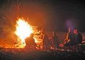
Another view of the fire
Another view of the beach
Shower
Trash- 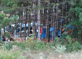
The woods
The tables in Bar Chambao- 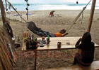
Chillout
Eco coctail
Love
Diversity
A child sleeping at the fire
After party
Hotel- 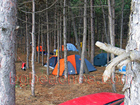
Tents in the woods - 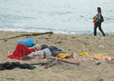
Contrast
Children
Sailing boat